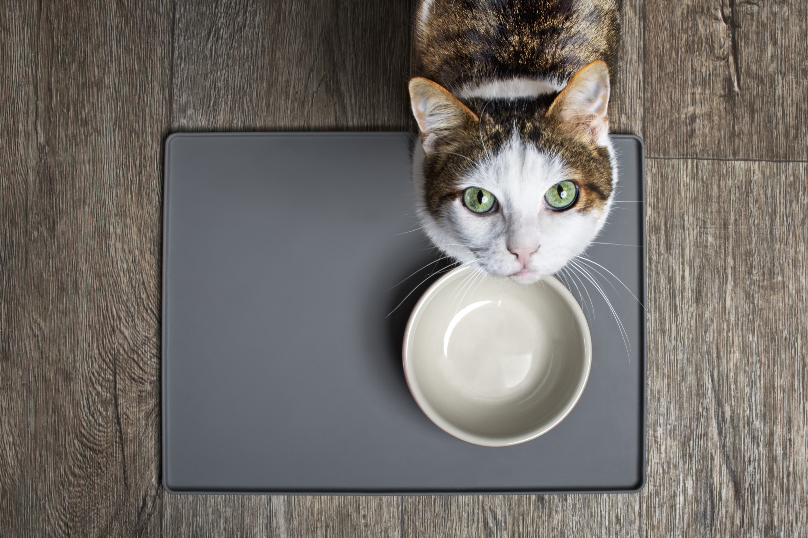

The Best Cat Food Recipes for our Feline Friends

Is your cat tired of dry food? Has he ever given you this look?
If so, this article is perfect for you! Here you can find five delicious recipes to spoil your cat with:
Chicken Thighs with Bone
Cooked Rabbit & Poultry
Raw Chicken and Salmon
Raw Pork
Raw Cat Food